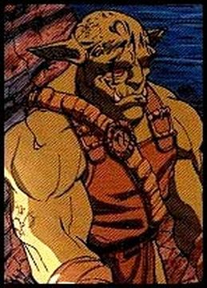

Taran Dracon
Identity
Yahoo! ID: tarandracon
Name: Taran "SniperOrc" Dracon
Kindred: Khazan Orc
Class: Warrior
Sex: Male
Height: 6' 1"
Weight: 200#
Attributes
Strength: 17
Intelligence: 9 (currently, 3)
Luck: 32
10 [initial stat]
+2*2 [bonus for second level]
+4*2 [bonus for fourth level]
+5*2 [bonus for fifth level]
Constitution: 30
16 [initial stat]
+3 [bonus for 3rd level]
+5 [from Talo Tatoo Worm]
+6 [bonus for 6th level]
Dexterity: 11 (currently: 5)
Charisma: -15
Speed: 17
|

|
Other Stats
Combat Adds: 15 (Str +6, Luck +9, Dex +0)
Hits: 40 (doubled)
Wt Carried: 1146.5 ++
Wt Possible: 1700
Level: 5
Experience Pts:
16,415, 5th level [Start]
+ 1 level
-------------------
25,000, 6th level [End]
Skills (for use with Shrsholn's 5th edition house rules)
Base Skill points: 9
Athletic Skills
(04) Tumbling: 1
(04) Jumping: 1
(04) Riding / Horse: 1
Combat Skills
(04) Bladed Combat / Swords: 1
(04) Bladed Combat / Knives: 2
(05) Combat Archery / Crossbow: 1
Communication Skills
(10) Conversation: 1
Wilderness Skills
(04) Fire Building: 1
Languages: Common Tongue, Orcish, Yithian (Orc trading language)
Nationality & Place of Residence: Outskirts of Khazan, Dracon Warren
Clothes/Armor:
leather tunic and pants (worn) (wt=5)
lamellar armor (worn, damaged) ([9 out of 10] *2 hits, STR: 5, wt=900) (A5)
sturdy boots (worn) (wt=40) (A5)
Weapons:
(whammied) Uncle Dracon's "bastard" sword (broadsword with big "D" on
the hilt) and scabbard, strapped on back (STR: 15, DEX: 10) (A0)
a Tally merc. over-and-under crossbow, from alternate timeline (strapped
in holster on carrying case on shoulder) (STR: 15, DEX: 10, wt=60) (A3)
shoulder carrying case for crossbow (worn) (wt=20) (A3)
enchanted quiver, 20 bolts (L0SR vs. Dex to auto-hit. As long as
Taran draws from the quiver, it will never become empty, however if
someone else takes the last bolt, the enchantment is broken. Enchanted
by Arahk Gnahk.) (worn on back) (wt=8) (A1)
Equipment:
an eating knife (1d6+2) (wt=5)
a lantern (A7)
Lost equipment last seen on the "Night Gail" sailing ship:
a rain-proof parka (A6)
a strange-looking magic shield (10 hits, wt=75) from alternate timeline
(strapped on left arm) (A3)
backpack (wt=5) containing:
3 potions of healing (heals 8 con, wt=2 each)
1 water breathing potion (wt=2) (A6)
1 potion of flying (lasts 10 minutes) (wt=2)
1 potion of invisibility (lasts 10 minutes) (wt=2)
crummy wizard's blue robe with singed spot on front (A1) (wt=5)
1 serpent power totem (47 uses, up to 20 STR pts per use for
spellcasting, wt=.5) (A1)
frogskin pouch (A1) (wt=5) containing:
three shiny pebbles (A1)
an orange feather (A1)
a vial full of gray powder (A1)
a bone carved to look like a snake (A1)
a set of bone dice (A2) (wt=1)
money bag:
10 platinum dragons (A3)
10 gold crowns (A5)
plain beaded necklace (wt=2)
(appear, speak, understand as lizardman) (A3)
water proof bag containing: (A6)
one week's water proof rations (A6)
Stolen by Cambrea, AWOL elf and Taran's one-time mate:
Serena's backpack (A6)
At Dracon Warren:
money bag:
4 silver serpents (flying serpent on obverse, pyramid reverse) (A1)
golem ruby (A2)
147 platinum dragons (A3)
64 gold crowns (A5, A6)
2 rubies (200 gp each) (A6)
1 emerald (150 gp) (A6)
5-foot hard-wood staff (2d6) (A1)
engraved hand axe (A1)
sealed message for Captain Stonenose Glump (never delivered, A1)
paper label with words "Catapult 93 for boarding on flyingship 12 of
Zweetz Citadel. Under penalty of law this tag is not to be removed
except by owner." (A1)
Khazan sewer goblin wizard's black stove pipe hat (A2)
a necklace totem to some goblin god (A2)
a small book entitled 101 Ways to Prepare a Fairy (A2)
box of 12 fancy crossbow bolts (wt=2) (A4)
Abilities/Hindrances
It is rumoured, but not confirmed, that he and his brother can share their
brain, which makes endearing noises like and when it is
transferred. Like all Orcs, he has infravision, known to Dracons as
HotVision(Tm). Like all Dracons, he is partial to the expressions "Frak"
and "Fewmets."
Wizard Symbiont (A3)
Underneath the skin of his back, Taran has a symbiotic Talo Tattoo Worm:
IQ 10, CON 5 (added to host's CON).
The symbiont imparts two magical abilities to the host. Activation of either
ability is automatic and costs the host 3 DEX per activation (gained back 1
point per hour). If the host doesn't wear gloves, there is a 50% chance that
these abilities will not activate.
* Portal detection: within 100' (tattoo will glow purple)
(Wearing gloves is bad for his DEX when many portals are near!)
* Magic absorption: once every 24hrs, any magical spell cast on the host
will have no effect if the host makes a Level 3 SR versus IQ.
(Wearing gloves is good for bad spells, but bad for good spells!)
In The Pirate Blade of Rahnian, there is evidence for these additional
(dis)abilities:
* Open portal on demand (20s duration, temporary loss of 3 DEX and 3 INT,
gained back 1 point each per hour)
* Recognition of portal opened by another Talo Worm (indicated by sharp
pain at tattoo site and mental awareness but no tattoo glow or DEX hit,
range >= 300')
* Barely controllable hatred of Hobbits (and hatred of host by Hobbits)
when they come in close contact with the host of this worm.
* Near Shipy the Cunning (hobbit), or perhaps all hobbits, Taran undergoes
a physical change much like the one that overcomes Bilbo Baggins in The
Lord of the Rings: The Fellowship of the Ring movie. Taran's worm
intensely dislikes Shipy, and perhaps all hobbits, and tried to kill
Shipy by taking over Taran's body at one point during The Pirate Blade
adventure.
* The worm itself has its own agenda and far more control over Taran's
actions than he cares to admit.
Background/Personality
Taran is the younger son of Oother Pe'ng Dracon, son of Uklug, son of Nishgrahk,
son of Ratajanx, who slew Ancalagon the Black Wyrm. It is rumoured, but not
confirmed, that Taran and his brother Jax are twins.
In his first adventure (Ken St. Andre's "Agents of Lerotra'hh" PBEM), Taran
got turned into a lizard, helped to uncover the serpent god Zweetz's invasion
plans, and was the barbarian Orc Shaman Pardeloop's "worsth nightmare." Then
he got killed by a flaming Balrog who fell out of nowhere. His faithful brother
resurrected him later. He advanced to second level and earned 1153 adenture
points in this adventure before he died. The story of his resurrection
and full reversion to orc (from lizardman form), as well as his
futher travels with Arahk Gnahk have not been recorded yet, although the
adventure itself took place in 1312-1313 A.K.
Taran's second adventure was "Goblins in the Mist", where he shot himself (Jax
bailed him out again), got spooked by illusions and towering golems, and rode
on a magic carpet. He earned 3400 adventure points in Goblins in the Mist.
Taran's third adventure, which began in 1314 A.K., was a time-tripping
adventure where he was caught in a time-loop that ended with his death by
self-impalation. Upon escaping the loop he and his adventuring companions
were transported to the past to prevent the death of a lizard man who would
eventually be the architect of peace in Khazan who otherwise would have died,
allowing the turmoil and war of the present. They were successful in their
mission, thus changing the future. During this mission, Taran
first met Cambrea the elf during a time that he was imprisoned by some
lizardmen, and flirted with her despite her elven race. He earned 5,553
adventure points in "Lizardmen in Red Water Bay."
Taran's fourth adventure was a time and dimension-hopping adventure where he
was conscripted into infiltrating a prison set in an alternate reality to
rescue an alien agent who had been trapped there. Shortly after arriving in
the alternate dimensional prison planet, he found himself transported back to
Khazan with a tatoo on his back, 300 gold and a box of 12 fancy crossbow
bolts. He received 2259 adventure points in the abruptly ended "Oblique Streams."
Taran's fifth adventure was a mercenary exploit against the grotesque invaders
of Khazan. He and his brother Jax went head-first into a fortress looking for
the source of the "Dangerous Creations." Quickly they found a traitor in their
midst and a gruesome bug alien which was dispatched by The Death Goddess
Lerotra'hh herself. Having unwittingly brought with them the means by which
Lerotra'hh could enter the scene (an amulet), they succeeded in their quest by
revealing that the evil was caused by a Zweetz alien breaking the truce.
Arahk Gnahk made a guest appearance. Taran was pleased to see both Arahk and
the Death Goddess remembered him, and received the gift of knowledge about his
Talo Tattoo Worm, as well as 78 gold pieces, and 1950 adventure points in this
adventure.
Taran's sixth adventure was the quest for "The Pirate Blade of Rahnian," in
which Taran and his fellow adventures accompanied the hobbit Shipy the Cunning
on a mission to stop a legendary sword containing a balrog from being taken
from a far-off temple, which would release the balrog. They found the sword
and stopped it from being taken, and in the process Taran used his Get out of
Trouble Token coin given him by Lerotra'hh with unexpected results: he was
transported to a swamp where he met up with Cambrea the elf, whom Taran had
met in an pre-altered timeline during his Lizardmen in Red Water Bay adventure.
Taran unwittingly rescued her from her imprisonment in the form of a hideous
swamp creature and the two mated. Following their return to the rest of the
group, using his Talo Worm's portal-opening powers, Cambrea stole the backpack
Taran had found in the Temple, and disappeared. Also, Taran's backpack of
equipment was left on board the ship Night Gail. Taran earned 2,200 adventure
points in the adventure, and also picked up 10 gold crowns, 2 rubies worth 200
gp each, and 1 emerald worth 150 gp. The adventure took place in 1315 A.K.
Taran's latest and seventh adventure has taken him to a parallel Trollworld
in the year 1466 A.K., prior to Khazan's rousing.
Appearance
Taran is an orc with dark muddy green skin and large canine tusks which he
brandishes routinely. He is slightly leaner than Jax, though still quite
burly. Taran is a city Orc, born and bred in the warrens of Khazan. There
may be some Uruk-Hai (or at least Uruk-Hai) in his lineage, for he is not
afflicted with Orcs' sensitivity to light. On occasion, it is rumoured that
he is the handsome brother. Taran used to be missing parts of some fingers
(Jax got a little too rough during swordplay), so he took to bowmanship.
But, he got his full fingers back during his time as an agent for Arakh Gnahk.
Taran used to have a lizard head. He got that fixed, too. He he has a tatoo
on his back of unknown origin which he found after returning from the Oblique
Streams adventure.
Allies / Significant Acquaintences
* Jax "BlurBlade" Dracon -- Taran's brother and best friend. Taran
and Jax's adventuring career have developed alongside one another,
from their recruitment into the Agents of Lerotra'hh until the recent
Pirate Blade of Rhanian quest.
* Shipy "the Cunning" -- hobbit thief whom Taran met in his first
post-Agents adventure, and with whom Taran has developed a love-hate
friendship. Taran's recent acquisition of the Talo Tattoo worm have
strained their relationship, although Taran doesn't know it.
* Jack de Crampion -- animated skeleton with whom Taran has adventured
along side on several occasions. Taran appreciates Jack's fine wit and
admires his ability to laugh in the face of danger.
* Domina -- succubus demon with whom Taran has adventured along side
in several adventures. Domina and Taran teamed up together during the
Lizardmen in Red Water Bay, adventure where Taran realized he liked to
flirt with naked human-like females.
* Lilac de Sprite -- female fairy who taught Taran to appreciate
sun-dried lizards.
* Arahk Gnahk -- commissioned Taran on his first adventure, and has kept
tabs on Taran throughout his career.
* Lerotra'hh -- Knows of Taran through her consort, Arahk Gnahk. Has
aided Taran on occasion through use of favor coins and good graces.
* Cambrea -- elf whom Taran met in an alternate timeline where Khazan
was at war with the lizardmen. Together with Domina, they were bound
and naked prisoners of the lizardmen, and later worked alongside as
agents to infiltrate the enemy camp of the lizardmen. That timeline
and their meeting, however, was shifted into obvlivion when events in
the past changed the future. During the Pirate Blade of Rhanian
adventure, Taran used a Death Goddess favor coin in an attempt to
save his brother Jax, who had unwittingly begun the Pirate Blade's
reformation, and in doing so was transported to an unkown swamp where
he was captured by Hilda the swamp monster. Resigning himself to his
separation and captivity, he gave in to the affections of Hilda, and
in kissing her broke Lerotra'hh's curse that had been cast upon her.
Hilda turned into Cambrea the elf, who did not remember Taran but knew
of him through the Death Goddess. Cambrea, grateful for her release,
and Taran, who had a history of attraction to non-orcish female curves,
mated. Eventually, they met back up with the rest of the party in
Khazan, where she stole some of his treasure and fled the city, much
to Taran's dismay.
* Bela Oxmyx -- elf from Middle Earth who discovered how to use
Taran's Zweetz power totem, and who adventured along side Taran in
several adventures, forming a close friendship with him. Bela has taken
particular interest in the "song" he heard after Taran and Cambrea's
mating.
home |
Page modification date: